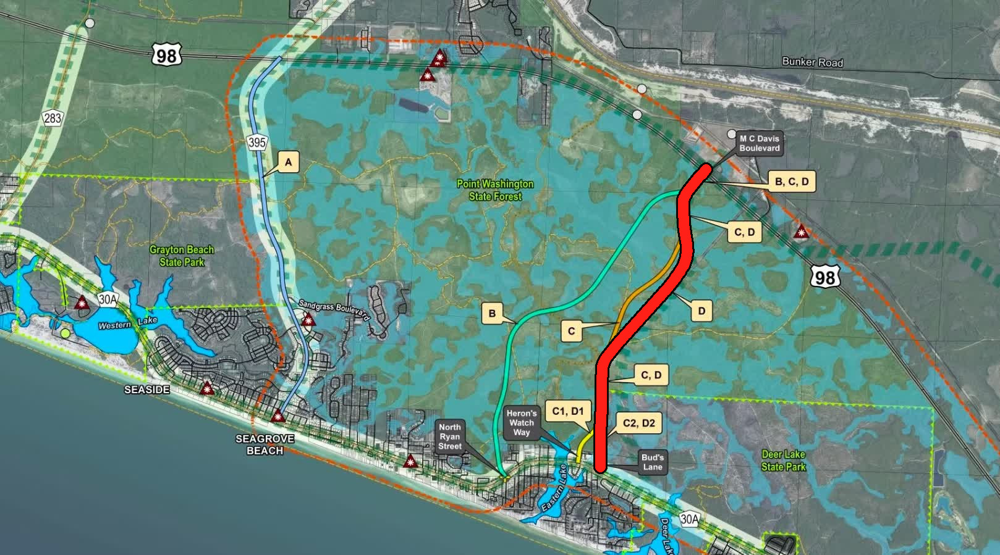
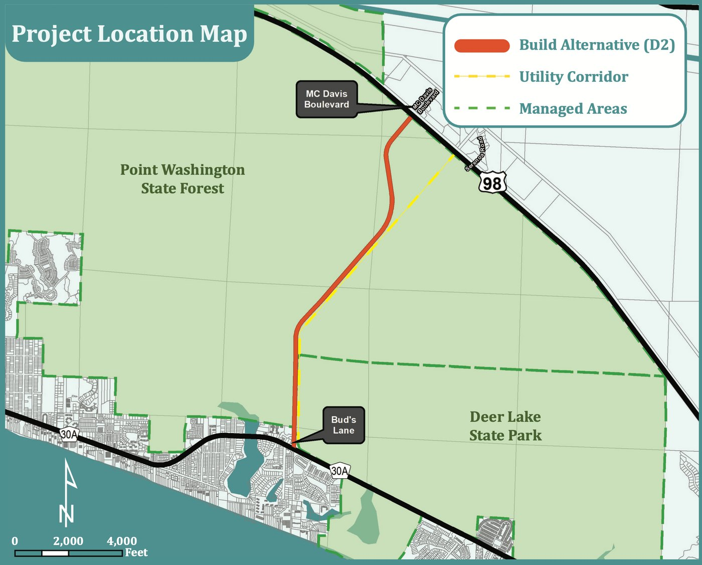

01 The claim

The Road Near The Powerlines
Understanding the proposed South Walton connection between Scenic Highway 30A and US 98
How 30A Connects to US 98
This map shows existing routes and the proposed South Walton Connector.
- US 98
- Scenic 30A
- Existing connectors
- Proposed D2
- Conservation land
Distances follow Scenic 30A between the junctions: 3.5 miles from the west junction at Destin to CR 393, then 2.2 miles to CR 83, 2.1 miles to CR 283, 2.7 miles to CR 395, 6.2 miles to Watersound Parkway, and 1.8 miles to the east junction at Inlet Beach. Proposed D2 would meet Scenic 30A between CR 395 and Watersound Parkway. The water south of the roads is the Gulf of America.
South Walton Connector Road
Project Timeline
-
2006 — Genesis 30A Traffic Study
Walton County's Genesis 30A Traffic Study examined transportation conditions along the 30A corridor and included discussion of a potential north-south roadway between CR 395 and Watersound Parkway. County officials later cited this study when reconsidering the concept in 2015.
-
July 28, 2015 — County revisits connector concept
County staff discussed the 2006 Genesis 30A Traffic Study with the BCC, specifically a potential north-south roadway between CR 395 and Watersound Parkway. Commissioners requested updated traffic information before proceeding further.
-
2016 — Genesis 30A study updated
Walton County updated the earlier Genesis 30A transportation analysis as traffic concerns and development in South Walton continued to increase.
-
2017–2018 — Formal PD&E process pursued
Walton County moved toward a formal Project Development & Environment (PD&E) study to evaluate potential alternatives for improving north-south connectivity between CR 30A and US 98.
-
June 25, 2018 — Atkins selected for PD&E
The BCC awarded RFQ 018-027 for PD&E services for the South Walton Connector Road and authorized negotiations with Atkins Engineering. During the meeting, residents spoke both about environmental concerns and the transportation problems the study was intended to evaluate.
-
September 11, 2018 — $597,780 PD&E contract approved
The BCC adopted Resolution 2018-77 recognizing $597,780 in proportionate-fair-share funds for the project and approved the $597,780 Atkins contract for PD&E services for a South Walton Connector between CR 30A and US 98.
-
August 21, 2019 — Six alternatives presented to the public
Walton County held a public meeting presenting six build alternatives—A, B, C1, C2, D1 and D2—and comparing potential environmental, physical, social and economic impacts. The County described the project's primary purpose as improving connectivity between US 98 and CR 30A, with secondary goals including congestion relief, emergency response and evacuation, and multimodal transportation.
-
2020–2021 — PD&E process continues
The study continued through the COVID-era disruption while the South Walton Connector also remained part of regional transportation planning discussions.
-
December 9, 2021 — TPO considers significant public input
During development of the Okaloosa-Walton TPO's 2045 Long Range Transportation Plan, public comments on the proposed 30A to US 98 Connector Road (Power Line Road / A-028) included 181 supporting the road (60.1%) and 120 opposing it (39.9%). Citizens also spoke both for and against the project at the December 9 meeting. The project remained in the PD&E phase.
-
2022 — Project remains in regional transportation planning
The South Walton Connector continued to appear in regional transportation planning while Walton County's PD&E study remained underway.
-
March–April 2023 — Phase I PD&E reaches final stage
Walton County and Atkins presented the study history, transportation purpose and need, environmental considerations, alternatives, agency coordination and public involvement as Phase I approached completion.
-
April 18, 2023 — D2 presented as the preferred alternative
County materials identified Alternative D2 as the preferred alternative. The concept was a new north-south connection between CR 30A and US 98 using a two-lane rural roadway with 11-foot travel lanes and a 12-foot multi-use path within approximately 150 feet of right-of-way.
-
April 2023 — Phase I concludes; Phase II requires future funding
The County stated that Phase I would conclude at the end of April 2023. Phase II could begin when funding became available and would update project data, provide additional public involvement, continue agency coordination and mitigation work, and advance the project toward Location Design Concept Approval. Design and permitting would require additional future funding.
-
February 27, 2024 — $350,000 programmed for Phase II
The BCC adopted its FY2024–28 Five-Year Work Plan. Project #83, South Walton Connector Road PD&E Phase II, included $350,000 in FY2026 SWIF funding.
-
September 10, 2024 — Phase II funding remains in five-year plan
The adopted FY2025–29 Five-Year Work Plan again listed South Walton Connector Road PD&E Phase II, with $350,000 programmed for FY2026.
-
September 22, 2025 — Connector dropped from new five-year plan
Walton County adopted its FY2026–30 Five-Year Work Plan. The South Walton Connector and the previously programmed $350,000 Phase II allocation were no longer carried forward in the adopted plan. The County confirms that the FY2026–30 plan was adopted on September 22, 2025.
The Proposed Route
The 2023 County materials identified D2 as the preferred build alternative. The proposed concept was a two-lane roadway with 11-foot travel lanes and a 12-foot multi-use path within a 150-foot right-of-way.

South Walton Connector
FACT vs. FAKE
Ten common claims about the proposed connector, examined against the public record.
-
01 The fact
The road itself does not approve more homes, hotel rooms, or businesses. It provides another way to travel between US 98 and 30A. The county's 2040 traffic model forecast lower traffic on several existing routes with the connector. Traffic can shift, however, and new roads can sometimes encourage additional driving.
What the 2040 traffic model projected
Estimated vehicles per day on existing roads, with and without the proposed connector.
- Without connector
- With connector
Key takeaway: The published model forecast less traffic on these existing roads, not more.
Source: Draft 2021 Walton County Mobility Plan, Table 5, printed p. 45 ↗These are 2040 scenario forecasts from a 2021 draft report, not observed counts or a guarantee.
-
02 The claim
“Listen to the locals, not the developers.”
02 The fact
Local residents support the connector, too. The project was initiated as public transportation planning, not a developer's subdivision application. Residents who want another route, better access and more travel options deserve to have their voices heard alongside those who oppose it.
See the documented project timeline -
03 The claim
“The locals don't want this road.”
03 The fact
Public input includes substantial local support. A December 2021 TPO comment tally listed 181 comments supporting the road and 120 opposing it. That's 60.1% of those classified comments in favor, although public comments are not a representative poll of all residents.
2021 public-comment tally
60.1% support (181)39.9% oppose (120)
Specific public-comment collection reported in the site's Dec. 9, 2021 timeline; not a scientific survey of all locals.
-
04 The claim
“This road is just for developers.”
04 The fact
The project's stated transportation purposes include connectivity, emergency access, evacuation and multimodal travel. A new public road does not, by itself, approve a subdivision, hotel or commercial project. Access and land-use permissions are separate questions.
-
05 The claim
“They're building a major highway through the forest.”
05 The fact
The preferred D2 concept described in the county's 2023 material was a two-lane rural road with 11-foot travel lanes and a 12-foot multi-use path, not a four-lane highway. The footprint is still significant and would require environmental review.
County project handout ↗ -
06 The claim
“Just improve the roads we already have.”
06 The fact
Improving existing intersections and adding a missing north-south connection solve different transportation problems. The stretch between CR 395 and Watersound Parkway has a long gap without a comparable connection from 30A to US 98.
-
07 The claim
“The connector won't help during emergencies or evacuations.”
07 The fact
Another north-south connection could provide a useful alternative if existing roads are congested or obstructed. Improved emergency response and evacuation flexibility are documented project objectives. The size of any time savings would depend on actual conditions and operations.
-
08 The claim
“They're cutting an entirely new route through untouched forest.”
08 The fact
The preferred route follows an existing powerline and utility corridor through Point Washington State Forest. A dirt utility-access road already runs beneath the powerlines in that corridor. Turning it into a public roadway would still require construction, clearing and environmental mitigation; it is not the same as building through a fully untouched corridor.
See county alignment map ↗ -
09 The claim
“The county never looked at alternatives or asked for input.”
09 The fact
The county presented six build alternatives in August 2019 and conducted public involvement during the PD&E process. Public views were mixed, but saying no alternatives or opportunities for comment existed is inconsistent with the project timeline.
Review the project timeline -
10 The claim
“The connector automatically means more development along 30A.”
10 The fact
Building a public road does not itself rezone land, raise permitted density or approve new commercial projects. Those decisions require separate land-use processes. Easements would be put in place to prevent any future development.